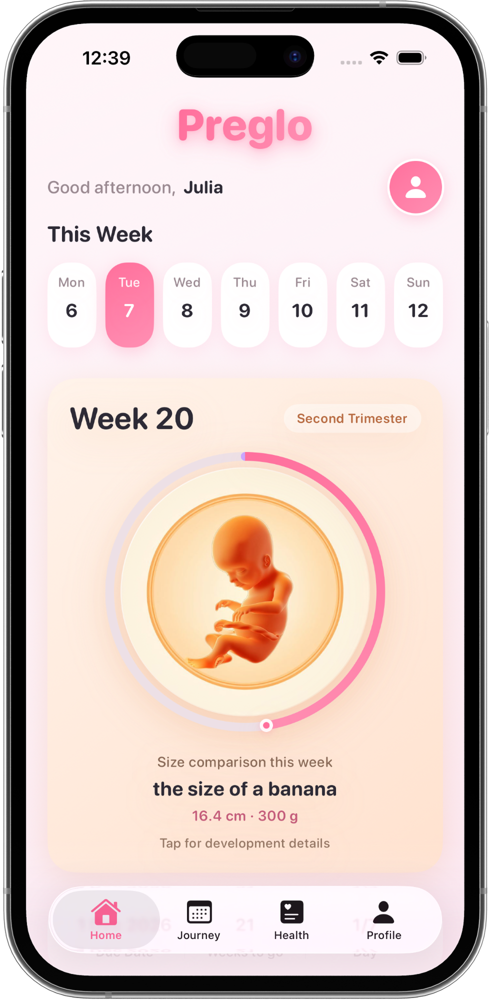
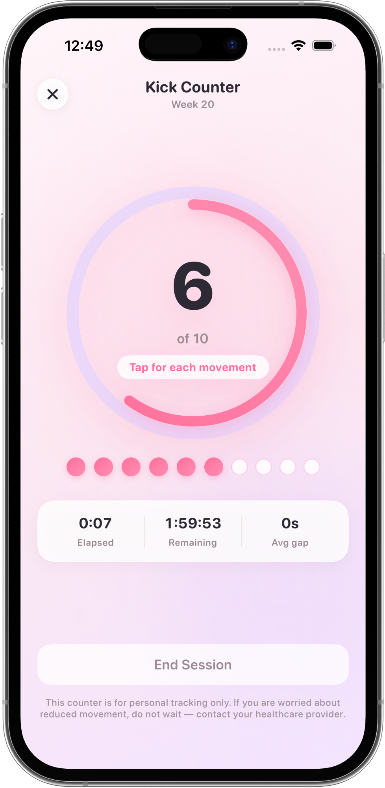

Preglo
Pregnancy tracker app for a calmer week-by-week journey
Track baby kicks, symptoms, water, and growth in one private iPhone companion — simple enough for every day.

assets/ss1.pngBuilt for real pregnancy days — not clutter.
From early weeks to the third trimester, Preglo helps you log what matters: movements, mood, hydration, and appointments — without noise.
Pregnancy week tracker
See your week, trimester, and gentle baby size notes as you go.
Baby kick counter
Count movements in a timed session and keep a clear history.
Contraction timer
Log contractions simply when you need a personal timer.
Pregnancy water tracker
One-tap glasses and bottles toward a daily hydration goal.

assets/ss2.pngEverything in one quiet place.
- Kick counter & contraction timer Practical tools for later pregnancy, ready when you need them.
- Weekly baby growth Friendly size comparisons and clear development notes.
- Daily log & water Mood, symptoms, notes, and hydration — without clutter.
- Home screen widgets See your week and days to go without opening the app.
Explore all features or download on the App Store.
Frequently asked questions
What can I track with Preglo?
Pregnancy week and due date progress, baby kick sessions, contractions, mood and symptoms, water intake, health measurements, bump photos, and home screen widgets.
Is my pregnancy data private?
Your data stays on your device. You can enable optional iCloud Backup. Preglo does not require creating an account.
Who is Preglo for?
Expectant parents who want a calm, organized pregnancy tracker with a kick counter and everyday logging tools on iPhone.
Preglo
Start tracking with clarity today.
Private by design. Optional iCloud backup. Free to download on the App Store.